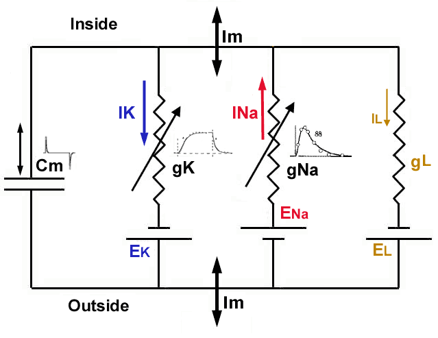

”These ionic concentration gradients across the cell membrane constitute the driving forces (or chemical potentials) for ionic currents flowing through open channels in the membrane. In other words, the ionic concentration gradients act like DC batteries for cross-membrane currents.” [7]
Fig. LABEL:fig:AP_schematic shows the concept of the Action Potential (AP)

The biological ’equivalent circuit’ models assume that the circuits comprise point-like ideal discrete elements such as condensers and resistors, and some hidden power changes their parameters according to some mathematical formulas, furthermore ideal batteries with voltage that may again be changed by that power. All they are connected by conducting (metallic) ideal wires and their interaction speed is infinitely high (the Newtonian ’instant interaction’). Using that abstract model enables them to use the well-known classic equations, named after Ohm, Kirchoff, Coulomb, Maxwell and others. However, those abstractions have severe limitations. Biology applies Ohm’s Law to its objects while claims that its objects are non-ohmic; understands that neural currents comprise ions while claims that the ions do not feel the Coulomb repulsion; measures ions’ propagation speed but in its equations it claims that their effects are instant; hypotesizes non-existing physical mechanisms to make their nature. In general, biophysics abstracts from the world of the physics-inspired mathematical formulas a fictitious nature where biology lives and hypothesises complementary mechanisms to achieve some resemblance with the true biological word. The examples include that ions in the ions channels do not repulse each other; that charge, potential and current are independent of each other; that ion currents do not repulse each other neither when they travel from the presynaptic terminal to the Axon Initial Segment (AIS); that some hidden power opens the ion channels to let ions in into the intracellular space, that ions with the same charge move in opposite directions when ions rush-in into the intracellular segment of the neuron; that the ions pass ion channels without being accelerated by the potential difference accross the membrane; the telegraph equations are applied to the case of axons although neither external potential nor current loss exists; and so on.
Even that unfortunate idea of equivalent circuits leads to analyzing ”electrotonic (electronic circuit equivalent) modeling of realistic neurons and the interaction of dendritic morphology and voltage-dependent membrane properties on the processing of neuronal synaptic input” [31]; that is, to study a simulated neuron built from discrete electronic components. However, the idea needs to put together many compone ”raises the possibility that the neuron is itself a network”. On the one side, such an idea misguides the neurophysical research (since actually a fake neural system is scrutinized, the validity of the approach is questionalized [32]), and on the other, since electroengineers understand the neuronal operation from the wrong model, it also misguides building neuromorphic architectures.
The equivalent circuits are a source of misinterpretations. As [7] formulates, ”In other words, the ionic concentration gradients act like DC batteries for cross-membrane currents.” We call the attention again, that ions represent the current, that is that current changes changes the concentration, that changes the voltage of the DC battery, unlike in the case of the equivalent circuits. This difference is significant in understand how the basic neuronal circuit works. Introducing equivalent circuits prevents explaining the fundamental electric phenomena.
One wrong consequence of forgetting that the charge transfer mechanism is entirely different, the charge carriers are large and heavy (and as a consequence: slow) ions instead of electron (cloud), furthermore they are not necessary present in the volume under test and the ’construction’ of biological matter enables the tested medium to produce charge carriers, using ’equivalent circuits’ for neuronal operation. This fallacy entirely falsifies the conclusions from the measurements.
Another wrong consequence of using ’equivalent circuits’ to describe the electrical operation of neurons is believing that the currents in the biological circuit do not change the concentration, and through the concentration, also the potential; see also section B.3. The ’equivalent circuits’, of course, use a constant potential (they follow the abstraction used in the theory of electricity, although the ’ideal batteries’ also may produce their voltage using chemical processes), and unreasonably, some mystic process changes the resistance/conductance of components. This wrong abstraction results in numerous misunderstandings, among others, introducing ideas such as parallel oscillator equivalent of neuron, input resistance, delayed rectifier current, resting current, and time- or voltage-dependent conductance. Furthermore, we cannot interpret, among others, how neuronal electricity works in lack of external potential; how slow currents operate neuron’s infrastructure, how and why action potential is generated. Deriving the time course of the Nernst-Planck potential opens the way to a quantitative understanding of neurophysical electrical processes, including their time course.
Again another wrong consequence is that the two secondary abstractions ’potential’, and ’current’, became independent from the primary abstraction ’charge’ and each other (significantly contributing to the fallacy that ’physics cannot describe life’). Our equations and the underlying discussion point to the fact that the potential and the current cannot be separated from the charge. No ’delayed rectifying current’ and ’voltage- (or time-) dependent conductance’ exist. Those notions originate from the wrong interpretation of measured data derived from mismatching measured electrical data pairs and the misconception that biological structures and materials must behave like metals.
As we discussed in section LABEL:sec:Physics-TwoSegments, the unbalanced charge in neurons and the charge injected suddenly into the intracellular segment during a rush-in action are in the same order of magnitude. We also discussed that the charge injection (the appearance and flow of charge in the proximal layer on the membrane’s surface) causes well measureable mechanical, optical, etc. changes [33] on the membrane. Those changes are well observable on the low-concentration side, in the form of slow currents, and large-scale concentration and potential changes.
Those changes also mean that a large amount of charge passes from the high-concentration side to the low concentration side of the membrane, and causes a sudden drop on the high-concentration side of the membrane. As discussed, that change means simultaneously a change in the corresponding potentials across the membrane that solves the mystery why the AP AP stops. The potential across the membrane is defined by the difference of the potential of the two thin layers (see section LABEL:sec:Physics-Membranes) on the membrane’s surface. As we discussed, a huge electric field exists across the plates of the neuronal condenser, while a moderate one in the proximal layers. That means that the ions can quickly leave the high concentration when the rush-in injection begins. They produce an ’empty’ layer (and a potential gradient) whithin that layer and the ions in the neighboring layer start to move using the ’downhill’ potential. However, they do have a much slower speed, so they ’stop’ at some distance.